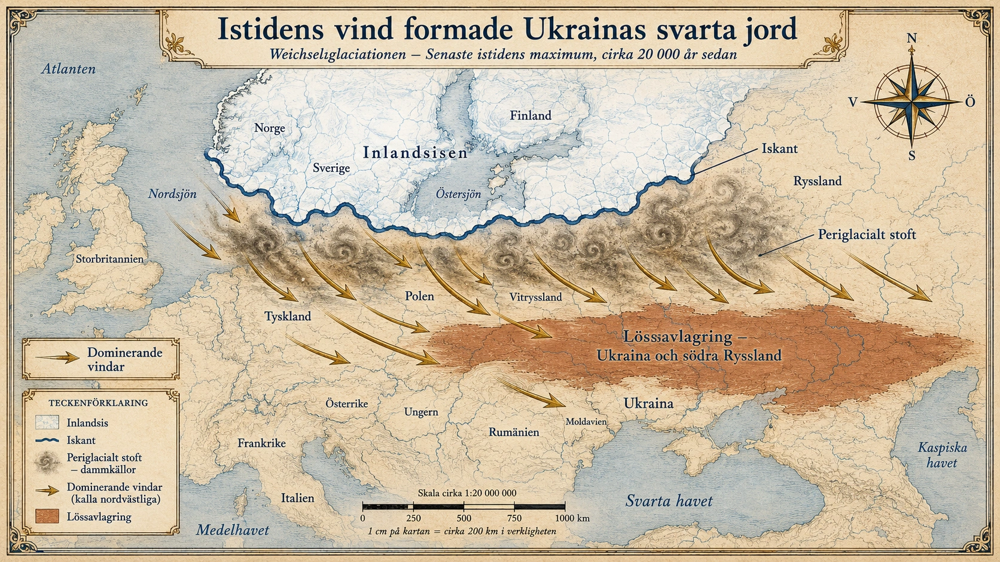

Istiden och lössjorden
— Hur isen format var vi bor —
När isen formade jorden
För omkring 20 000 år sedan såg jorden helt annorlunda ut. Den senaste istiden, som geologer kallar Weichsel-istiden, var då som mest utbredd. Hela Sverige och Finland låg under en kilometertjock istäcke. Stora delar av norra Europa, Ryssland och Nordamerika var begravda under is. Havsnivån var omkring 120 meter lägre än idag, eftersom så mycket vatten var bundet i landsisarna.
Söder om iskanten — i det område där isen inte sträckte sig — fanns ett karaktäristiskt landskap som kallas periglacialt. Det var kallt, blåsigt, träfattigt och näringsfattigt. Vegetationen bestod av kortväxta gräs och buskar, ungefär som dagens tundra. Men något viktigt hände i detta landskap. Isarnas tyngd hade malt ner berggrund till ett finkornigt stoft — något geologer kallar bergmjöl. Och de torra, kalla vindarna lyfte upp detta stoft från smältvattenslätterna och bar det söderut.
Där vindarna saktade ner, ofta i lä av berg eller långt från glaciärernas kanter, sjönk stoftet ner och lagrades. Lager efter lager, år efter år, i tusentals år. Resultatet blev tjocka avlagringar av extremt finkornig jord. På vissa platser blev lagren över 100 meter tjocka.
Detta är lössjord.

Vad gör lössjord så speciell
Lössjorden har egenskaper som är nästan unika i naturen:
- Den är extremt finkornig — partiklarna är så små att de syns med blotta ögat bara som dimma
- Den är lätt att bearbeta — man behöver inte hugga sönder klumpar som i lerjordar
- Den har utmärkt vattenhållande förmåga — fukten stannar kvar i lagom mängd
- Den är näringsrik från början, eftersom mineralerna nyligen krossats och inte hunnit lakas ur
Sedan kom gräsen. Efter att isen drog sig tillbaka för omkring 12 000 år sedan etablerade sig vidsträckta stäpper på lössjorden, särskilt i Östeuropa. Gräs har enorma rotsystem som dör och bryts ner varje år. Över tusentals år byggde detta upp ett oerhört rikt humuslager ovanpå redan bördig löss. På de bästa platserna kan humuslagret vara över två meter tjockt, med ett innehåll av organiskt material på 8–12 procent. Vanliga jordar har 3–5 procent. Detta är världens svartaste och mest produktiva åkermark — den så kallade tjernozemen, ett ryskt ord som betyder "svart jord".
Världens två stora lössbälten
Två områden i världen sticker ut som de stora lössregionerna:
Ukraina och södra Ryssland. Här finns det världens mest sammanhängande och produktiva tjernozembälte. Det sträcker sig från västra Ukraina, genom hela landet, in i sydvästra Ryssland och vidare österut. Detta är Europas kornbod. Sedan 1700-talet har området varit en av de viktigaste spannmålsproducenterna i världen. Ukrainas svarta jord räknas till de mest produktiva åkermarkerna på jorden.
Lössplatån i norra Kina. Här ligger ett 640 000 km² stort område med löss som på vissa platser är över 200 meter tjock. Det är världens största och tjockaste lössavlagring. Lössplatån ligger uppströms från Gula floden, och det är inte en slump att Gula floden kallas just så — den färgas av allt löss som spolas ner från platån. Det är också detta löss som under tusentals år har lagrats vid Gula flodens delta och skapat den extrema bördigheten där östra Kinas civilisation uppstod.
Mindre lössområden finns även i centrala USA (Mississippiområdet), delar av Argentina, Mellaneuropa och norra Frankrike.
Varför detta är geopolitiskt avgörande
Här blir den geologiska bakgrunden plötsligt mycket samtida.
Eftersom Ukraina och Ryssland tillsammans ligger på en av världens viktigaste jordbruksjordar, står de tillsammans för omkring 25–30 procent av världens veteexport. Det är en enorm andel. Många länder, särskilt i Nordafrika och Mellanöstern, är direkt beroende av spannmål från detta område. Egypten, till exempel, importerar omkring 80 procent av sitt vete från Ryssland och Ukraina. Egyptens 100 miljoner invånare lever alltså i hög grad på bröd som baktes av spannmål som odlades på lössjord som lagrades av vindar under istiden.
När krig bröt ut mellan Ryssland och Ukraina 2022 sköt vetepriserna i höjden globalt. Människor i fattigare länder, långt borta från konflikten, fick plötsligt svårare att betala för sin mat. FN:s livsmedelsorgan WFP — som själv köper mycket vete från området för humanitär hjälp — varnade för att miljontals människor i Afrika och Asien riskerade att gå hungriga. En kedja som började med isens malande för 20 000 år sedan slutade i akut hungersnöd i Jemen 2022.
Geografin är multilager i tiden
Det fascinerande med lössjorden är att den visar hur geografin verkligen är multilager i tiden. När vi tittar på en världskarta över befolkningstäthet ser vi en bild från idag. Men det vi ser är resultatet av processer som har pågått under helt olika tidsskalor:
- Under några dagar: dagens vädersystem
- Under några år: politiska beslut, ekonomiska konjunkturer
- Under några decennier: industrialisering, urbanisering, migrationsvågor
- Under några århundraden: kolonisation, krig, statsbildning
- Under några årtusenden: civilisationernas uppgång och fall
- Under några tiotusentals år: klimatets och landskapets stora svängningar
- Under några hundratusentals år: bergskedjornas och flodernas formning
Lössjorden tillhör näst sista nivån — något som skedde under tiotusentals år av istid. Det fenomenet är för länge sedan över. Isen drog sig tillbaka för 12 000 år sedan. Men dess effekt på den mänskliga geografin är fortfarande lika kraftfull som någonsin. Hundratals miljoner människor får sin näring från jord som blåste dit medan mammutarna ännu vandrade på jorden.
Vad det betyder för dig
Nästa gång du äter en brödskiva — fundera på var vetet kom från. Mycket möjligt att det odlades på en jord som blåste fram under en tid då Sverige låg under is. Att förstå var maten kommer ifrån är en del av att förstå varför världen ser ut som den gör. Och bakom det varför finns nästan alltid geografin — gömd, gammal, och fortfarande aktiv.
Djupdykning till avsnitt 2 (Befolkningens lokaliseringsfaktorer). Fördjupningsnivå.